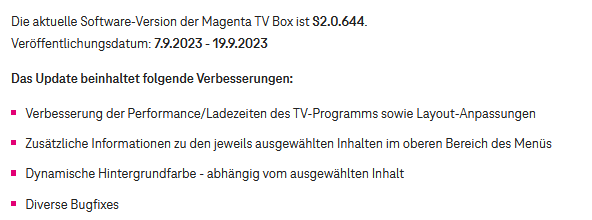

Ich frag mich ernsthaft, wo die 15 Release Updates für die TV Box sind (seit Oktober), von denen Diehl im Interview redet...
Und sollte es tatsächlich schon 15 Updates gegeben haben (also auch in Hintergrund), dann rennt trotzdem viel schief, weil wirklich eine Verbesserung ist einfach nicht zu sehen, bei der TV Box.
Die Call-Rate als Indikator zur Kundenzufriedenheit berücksichtigt aber nicht all jene, die die Hoffnung bereits aufgegeben haben...
es wäre besser sich die Kommentare hier in diesem Forum anzusehen als jene im Standard - oder zumindest auch 😉
Bei Android TV hat sich seit Februar nichts verbessert. Heute z.B. zum Einschalten wurde nach einem Passwort gefragt, das zu Beginn nur einmal eingegeben werden sollte. In unserer Qual konnten wir nur lachen. Der Fernseher ist furchtbar langsam, früher haben wir regelmäßig Sendungen gesehen, die eine Woche zurückgingen, jetzt nichts mehr, weil es ewig dauert, die Sendung zurück durchzugehen. Wir sind sehr sauer auf Magenta, wir sind bereits auf der Suche nach einem alternativen Dienstleister. Es ist unverständlich, warum ein guter Service verdorben werden musste. Wir nutzen im neuen Fernseher keine neuen Funktionen und können im Gegenzug die alten nicht mehr. Es ist eine Katastrophe und das Management sollte zurücktreten.
Hallo @Katica , ja, grundsätzlich sollte der Login beim Start der TV-Box automatisch passieren.
Hast du die TV-Box schon mal auf Werkseinstellung zurückgesetzt?
Der Energiesparmodus ist deaktiviert? Dies kann nämlich die Reaktionszeit der Box verbessern.
Beim Technikteam hast du dich schon gemeldet und hast die Punkte analysieren lassen? LG Karo
Am 31.8.2023 um 10:17 schrieb Katica:Bei Android TV hat sich seit Februar nichts verbessert.
Wäre ein Amazon TV Stick eine Alternative für dich? Die Magenta TV App funktioniert da recht flott drauf 🙂 . Ich bin da sehr zufrieden damit. LG RS.
Am 28.8.2023 um 19:53 schrieb stetre76:Ich frag mich ernsthaft, wo die 15 Release Updates für die TV Box sind (seit Oktober), von denen Diehl im Interview redet...
Das letzte Update war im Mai - jetzt haben wir September. Aber die Moderatoren hier sagen es ja immer wieder, es wird mit "Hochdruck" daran gearbeitet. Einfach nur traurig der ganze Verein.
Am 6.9.2023 um 06:52 schrieb gjus:Das letzte Update war im Mai - jetzt haben wir September. Aber die Moderatoren hier sagen es ja immer wieder, es wird mit "Hochdruck" daran gearbeitet. Einfach nur traurig der ganze Verein.
Da bist du wohl nicht ganz Up to Date:

LG RS.
Am 8.9.2023 um 13:25 schrieb Roman Schreiber:Da bist du wohl nicht ganz Up to Date:
Wer lesen kann - in dem Fall das Datum - ist wie immer klar im Vorteil!
Das Update selbst ist bei mir noch nicht angekommen. Da sie ja offenbar Zeit dafür gefunden haben die Farben anzupassen, haben sie hoffentlich auch den ein oder andern Fehler beseitigt und nicht wieder unzählige hinzugefügt.
Am 8.9.2023 um 13:25 schrieb Roman Schreiber:
Von diesem Update ist aber scheinbar nicht mehr viel übriggeblieben. Ist von der Seite verschwunden!
Am 11.9.2023 um 06:53 schrieb gjus:Wer lesen kann - in dem Fall das Datum - ist wie immer klar im Vorteil!
Muss ich wohl wirklich Bohnen auf den Augen haben. Wollte ja nur weiterhelfen. Wenn man dafür dann angemacht wird verzichte ich hier auf weitere Antworten. Schönen Tag noch 🙂 !
Hallo zusammen, bitte bleibt respektvoll und greift euch nicht an. Wir möchte ein gutes Miteinander hier haben.
Die Infos zum Update sind weiter in der FAQ ersichtlich.
https://www.magenta.at/faq/entry/~technische-anfrage~fernsehen~erste-hilfe/~MagentaTV-Update~master
Am 14.9.2023 um 12:31 schrieb Karo:Die Infos zum Update sind weiter in der FAQ ersichtlich.
https://www.magenta.at/faq/entry/~technische-anfrage~fernsehen~erste-hilfe/~MagentaTV-Update~master
Das ist wieder so eine hilfreiche Antwort. Vom Update S2.0.644 das im FAQ ab 6.9.22 angeführt war ist aber weder etwas zu sehen noch eine Information vorhanden.
Am 1.9.2023 um 17:20 schrieb Karo:Hallo @Katica , ja, grundsätzlich sollte der Login beim Start der TV-Box automatisch passieren.
Hast du die TV-Box schon mal auf Werkseinstellung zurückgesetzt?
Der Energiesparmodus ist deaktiviert? Dies kann nämlich die Reaktionszeit der Box verbessern.
Beim Technikteam hast du dich schon gemeldet und hast die Punkte analysieren lassen? LG Karo
das sind genau die sinnlos-ratschläge die einem einfach nur den kopf schütteln lasen.
auf die kritik, dass man auf einmal das passwort eingeben muss, kommt der rat, dass man auf werkseinstellungen zurücksetzen soll.....zum lachen. was soll das helfen? ernsthaft?=
Am 19.9.2023 um 20:19 schrieb AlBundyFan:was soll das helfen? ernsthaft?=
wir verstehen, dass es manchmal frustrierend sein kann, wenn man nicht ganz klar versteht, warum bestimmte Supportschritte erforderlich sind. Wir möchten gerne etwas Licht ins Dunkel bringen.
Wenn wir empfehlen, das Gerät auf die Werkseinstellungen zurückzusetzen, geht dies oft einher mit dem Download der aktuellsten Software-Version. Dieser Prozess kann dazu beitragen, vorhandene Softwarefehler zu beheben, die möglicherweise die Ursache für Probleme wie den automatischen Login sind. Auf diese Weise möchten wir sicherstellen, dass das Gerät optimal funktioniert.
Wir hoffen, dass diese Erklärung hilfreich ist und dazu beiträgt, die Notwendigkeit bestimmter Schritte besser zu verstehen. Solltest du weitere Fragen oder Bedenken haben, gib gerne Bescheid.
Mit besten Grüßen, JD.
Am 20.9.2023 um 17:43 schrieb Jonathan Dorian:Wenn wir empfehlen, das Gerät auf die Werkseinstellungen zurückzusetzen, geht dies oft einher mit dem Download der aktuellsten Software-Version.
Diese Erklärung würde also bedeuten, dass sich die Box nur dann aktualisiert, wenn man sie auf Werkseinstellungen zurück setzt und dann neu startet, um etwaige Problem zu beheben.
Wenn's nur um den Download der aktuellsten Software geht, dann könnte man als Support auch vorschlagen, dass man manuell nach einem Software Update sucht - die Option gibts ja in den Einstellungen. Das wäre mit weit weniger Aufwand verbunden, als die Box auf Werkseinstellungen zurück zu setzen. Setzt natürlich voraus, dass die manuelle Suche nach einem Update auch entsprechend funktioniert und verarbeitet wird.
Stell dir vor du müsstest dein Android-Smartphone jedes Mal auf Werkseinstellungen zurücksetzen, um das aktuellste Firmware Update zu bekommen oder um Probleme zu beheben, die ggf am Smartphone auftreten...ich glaube, deine Begeisterung würde sich in Grenzen halten, oder? (und ich red jetzt beim Smartphone vom 08/15 User, nicht Developer, die ROMs flashen o.ä.)
Am 21.9.2023 um 06:28 schrieb stetre76:Stell dir vor du müsstest dein Android-Smartphone jedes Mal auf Werkseinstellungen zurücksetzen,
Bei einem Handy wäre das wirklich problematisch, da dadurch sämtliche Einstellungen und Apps gelöscht würden. Bei einer TV-Box handelt es sich in der Regel nur um einige Einstellungen.
Ich bin mir nicht sicher, ob die Suche nach einem Update ausreicht, wenn bereits Fehler vorhanden sind. In diesem Fall könnte ein Zurücksetzen auf die Werkseinstellungen die beste Option sein.
Viele Grüße, JD.
Am 25.9.2023 um 15:01 schrieb Jonathan Dorian:Bei einer TV-Box handelt es sich in der Regel nur um einige Einstellungen.
Ich bin mir nicht sicher, ob die Suche nach einem Update ausreicht, wenn bereits Fehler vorhanden sind. In diesem Fall könnte ein Zurücksetzen auf die Werkseinstellungen die beste Option sein.
Mein Fazit dazu:
Magenta Note 5 - danke, setzen
Magenta kann ja nicht wirklich ernsthaft meinen, dass eine Android-basierte Box echt immer auf Werkseinstellungen zurück gesetzt werden muss, um Updates zu bekommen.
Falls das ernsthaft gemeint ist - bitte gebt das TV Geschäft auf, Magenta hat dort nix verloren.
Und jede Einstellung, die sinnlos neu eingestellt werden muss, weil eben immer ein Werkreset durchgeführt werden muss, ist eine zu viel.
Bringt einfach ein funktionierendes Produkt auf den Markt und veräppelt nicht die Kunden nach Strich und Faden
Am 26.9.2023 um 11:30 schrieb stetre76:Bringt einfach ein funktionierendes Produkt auf den Markt
Danke für dein Feedback! Ich gebe es gerne an unsere zuständigen Kolleg:innen weiter.
LG JD.
das ist so wie die ORF Gebühr. Zahlst du geld, aber kriegst nur Schei... dafür. Einfach lächerlich.
{kind=link}